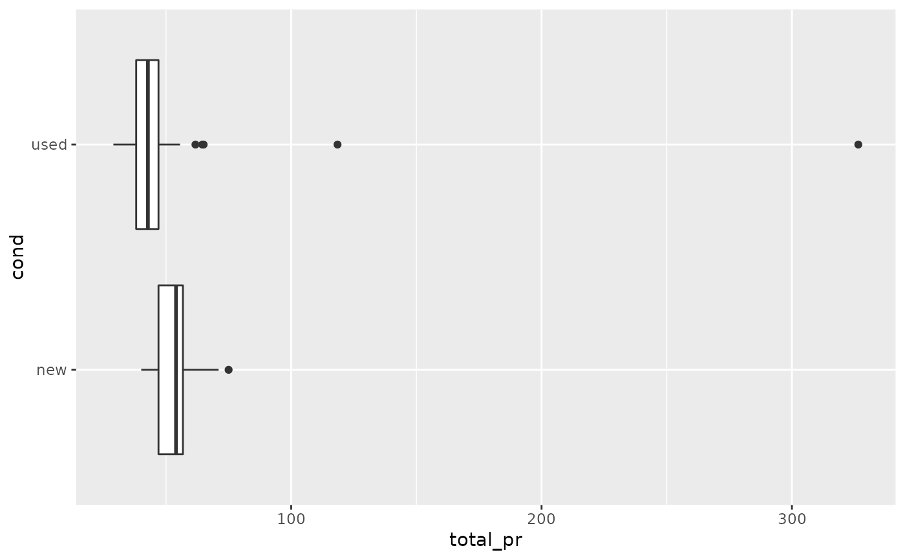
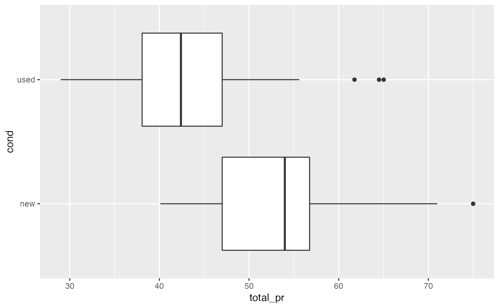
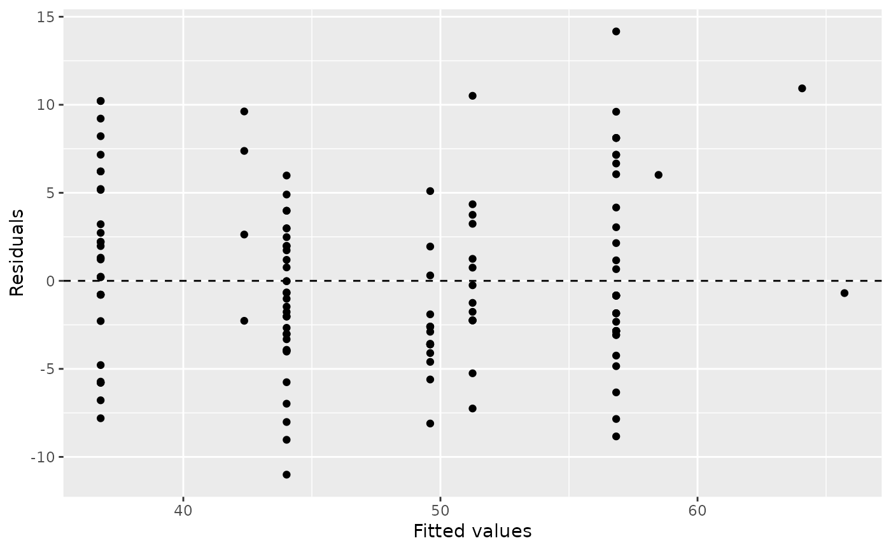
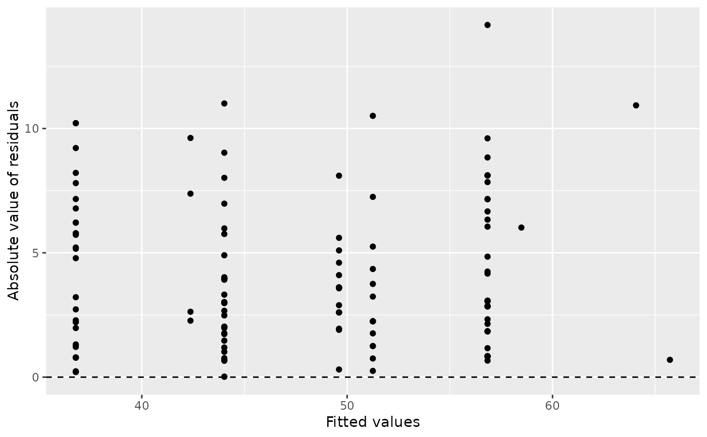
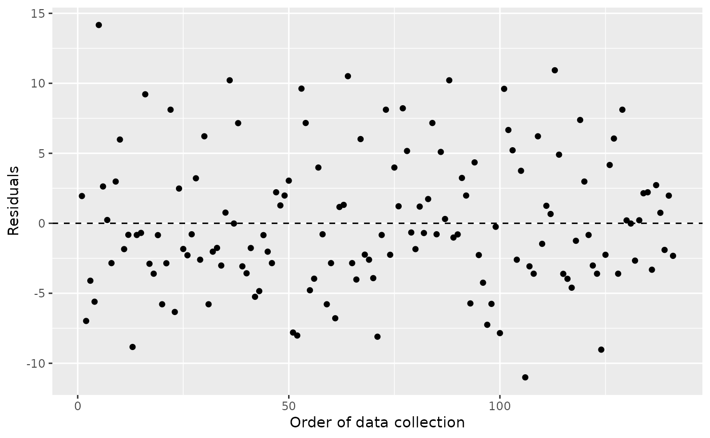
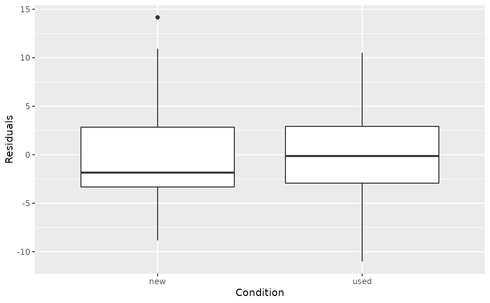
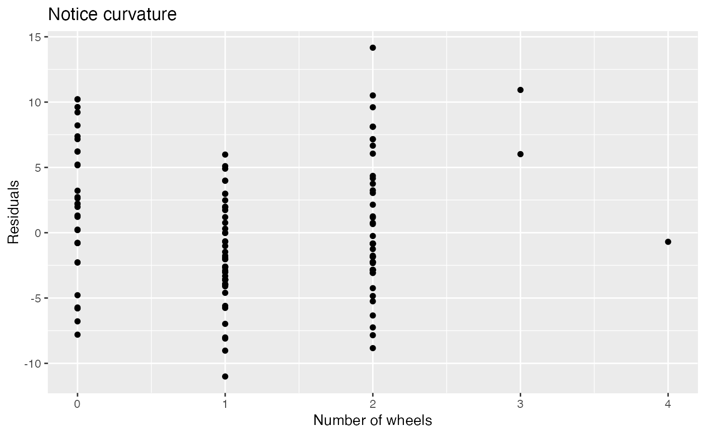

Auction data from Ebay for the game Mario Kart for the Nintendo Wii. This data was collected in early October 2009.
mariokartFormat
A data frame with 143 observations on the following 12 variables. All prices are in US dollars.
- id
Auction ID assigned by Ebay.
- duration
Auction length, in days.
- n_bids
Number of bids.
- cond
Game condition, either
neworused.- start_pr
Start price of the auction.
- ship_pr
Shipping price.
- total_pr
Total price, which equals the auction price plus the shipping price.
- ship_sp
Shipping speed or method.
- seller_rate
The seller's rating on Ebay. This is the number of positive ratings minus the number of negative ratings for the seller.
- stock_photo
Whether the auction feature photo was a stock photo or not. If the picture was used in many auctions, then it was called a stock photo.
- wheels
Number of Wii wheels included in the auction. These are steering wheel attachments to make it seem as though you are actually driving in the game. When used with the controller, turning the wheel actually causes the character on screen to turn.
- title
The title of the auctions.
Source
Ebay.
Details
There are several interesting features in the data. First off, note that there are two outliers in the data. These serve as a nice example of what one should do when encountering an outlier: examine the data point and remove it only if there is a good reason. In these two cases, we can see from the auction titles that they included other items in their auctions besides the game, which justifies removing them from the data set.
This data set includes all auctions for a full week in October 2009. Auctions were included in the data set if they satisfied a number of conditions. (1) They were included in a search for "wii mario kart" on ebay.com, (2) items were in the Video Games > Games > Nintendo Wii section of Ebay, (3) the listing was an auction and not exclusively a "Buy it Now" listing (sellers sometimes offer an optional higher price for a buyer to end bidding and win the auction immediately, which is an optional Buy it Now auction), (4) the item listed was the actual game, (5) the item was being sold from the US, (6) the item had at least one bidder, (7) there were no other items included in the auction with the exception of racing wheels, either generic or brand-name being acceptable, and (8) the auction did not end with a Buy It Now option.
Examples
library(ggplot2)
library(broom)
library(dplyr)
# Identify outliers
ggplot(mariokart, aes(x = total_pr, y = cond)) +
geom_boxplot()

# Replot without the outliers
mariokart %>%
filter(total_pr < 80) %>%
ggplot(aes(x = total_pr, y = cond)) +
geom_boxplot()

# Fit a multiple regression models
mariokart_no <- mariokart %>% filter(total_pr < 80)
m1 <- lm(total_pr ~ cond + stock_photo + duration + wheels, data = mariokart_no)
tidy(m1)
#> # A tibble: 5 x 5
#> term estimate std.error statistic p.value
#> <chr> <dbl> <dbl> <dbl> <dbl>
#> 1 (Intercept) 41.3 1.71 24.2 4.87e-51
#> 2 condused -5.13 1.05 -4.88 2.91e- 6
#> 3 stock_photoyes 1.08 1.06 1.02 3.08e- 1
#> 4 duration -0.0268 0.190 -0.141 8.88e- 1
#> 5 wheels 7.29 0.555 13.1 5.89e-26
#> # A tibble: 4 x 5
#> term estimate std.error statistic p.value
#> <chr> <dbl> <dbl> <dbl> <dbl>
#> 1 (Intercept) 41.2 1.49 27.6 6.64e-58
#> 2 condused -5.18 0.996 -5.20 7.21e- 7
#> 3 stock_photoyes 1.12 1.02 1.10 2.75e- 1
#> 4 wheels 7.30 0.545 13.4 1.11e-26
#> # A tibble: 3 x 5
#> term estimate std.error statistic p.value
#> <chr> <dbl> <dbl> <dbl> <dbl>
#> 1 (Intercept) 42.4 1.07 39.8 1.75e-77
#> 2 condused -5.58 0.925 -6.04 1.35e- 8
#> 3 wheels 7.23 0.542 13.3 1.29e-26
# Fit diagnostics
aug_m3 <- augment(m3)
ggplot(aug_m3, aes(x = .fitted, y = .resid)) +
geom_point() +
geom_hline(yintercept = 0, linetype = "dashed") +
labs(x = "Fitted values", y = "Residuals")

ggplot(aug_m3, aes(x = .fitted, y = abs(.resid))) +
geom_point() +
geom_hline(yintercept = 0, linetype = "dashed") +
labs(x = "Fitted values", y = "Absolute value of residuals")

ggplot(aug_m3, aes(x = 1:nrow(aug_m3), y = .resid)) +
geom_point() +
geom_hline(yintercept = 0, linetype = "dashed") +
labs(x = "Order of data collection", y = "Residuals")


ggplot(aug_m3, aes(x = wheels, y = .resid)) +
geom_point() +
labs(x = "Number of wheels", y = "Residuals",
title = "Notice curvature")
